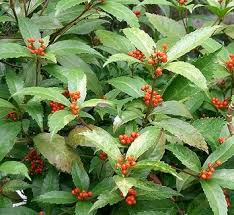

Chloranthaceae
Chloranthus Family
Chloranthaceae is a small but ancient family of flowering plants, representing its own distinct order, Chloranthales. It holds a crucial position near the base of the angiosperm evolutionary tree, potentially sister to the Magnoliids or the entire Mesangiospermae clade (Magnoliids + Monocots + Eudicots). The family comprises herbs, shrubs, and small trees, mostly found in tropical and subtropical regions. Key features include opposite, simple, serrated leaves with interpetiolar stipules, often swollen stem nodes, and highly reduced, small, often unisexual flowers typically lacking a distinct perianth. The fruit is a small, fleshy drupe.
Overview
Chloranthaceae is the sole family within the order Chloranthales, a lineage considered one of the earliest branches in the evolutionary history of flowering plants, diverging after the ANITA grade (Amborella, Nymphaeales, Austrobaileyales). Its exact relationship to the other major angiosperm groups (Magnoliids, Monocots, Eudicots) remains an active area of research, but it is undoubtedly an ancient and phylogenetically isolated group, making it vital for understanding early angiosperm evolution.
The family contains only four extant genera (Ascarina, Chloranthus, Hedyosmum, Sarcandra) and about 75 species. They are primarily distributed in tropical and subtropical regions, with a concentration in Southeast Asia, Malesia, and the Pacific islands, but also extending to the Neotropics (Hedyosmum), Madagascar, and New Zealand. They are conspicuously absent from mainland Africa and Australia. Habit ranges from perennial herbs (often aromatic) to shrubs and small trees. Stems frequently have swollen nodes, and the leaves are characteristically opposite, simple, and serrated, with interpetiolar stipules.
Chloranthaceae flowers are highly reduced and simplified, often unisexual, and typically lack a recognizable perianth (calyx and corolla). Stamens number 1 or 3 and are sometimes highly modified. The gynoecium consists of a single carpel producing a small drupe fruit. Some members, like Sarcandra, possess primitively vessel-less wood, a feature shared with only a few other basal angiosperm groups. The family has limited direct economic importance, though some species are used in traditional medicine or locally as tea substitutes.
Quick Facts
- Scientific Name: Chloranthaceae R.Br. ex Sims
- Common Name: Chloranthus family
- Number of Genera: 4 (Ascarina, Chloranthus, Hedyosmum, Sarcandra)
- Number of Species: Approximately 75
- Distribution: Pantropical & Subtropical (esp. SE Asia, Pacific; also Neotropics, Madagascar, NZ; absent Africa/Australia)
- Evolutionary Group: Angiosperms - Order Chloranthales (Early diverging lineage near Magnoliids/Mesangiospermae)
Key Characteristics
Growth Form and Habit
Perennial herbs (often rhizomatous and aromatic), shrubs, or small trees. Stems frequently exhibit distinctly swollen nodes. The wood of Sarcandra is primitively vessel-less (composed only of tracheids), while other genera possess vessels with scalariform perforation plates. Contain ethereal oil cells.
Leaves
Leaves are consistently arranged oppositely on the stem. They are simple, usually petiolate, with blades that are typically pinnately veined and have characteristically serrated or dentate margins. Small stipules are present, typically located between the petioles of the opposite leaves (interpetiolar), and sometimes fused into a sheath around the node.
Inflorescence
Flowers are borne in terminal or axillary inflorescences, which are often dense spikes, panicles, cymes, or sometimes condensed into heads. Individual flowers are small and typically subtended by a single small bract.
Flowers
Flowers are very small, highly reduced, inconspicuous (often greenish or whitish), and typically unisexual (plants monoecious or dioecious), though sometimes functionally bisexual (Chloranthus). A distinct perianth (calyx and corolla) is generally considered absent. Female flowers may have 3 minute teeth or lobes fused to the ovary base, sometimes interpreted as a reduced calyx. Wind pollination is common (Ascarina, Hedyosmum), but insect interactions or self-pollination may occur in others (Chloranthus, Sarcandra).
- Androecium (Male or Bisexual Flower): Stamens number 1 or 3. If 3 (common in Chloranthus), they are often fused at the base, and the central stamen typically has a 2-thecate anther while the two lateral stamens have 1-thecate anthers; this entire structure may be adnate to the ovary in bisexual flowers. If 1 stamen (Hedyosmum, Ascarina, Sarcandra), the filament is short or absent, and the anther may be conventional or somewhat modified (e.g., peltate).
- Gynoecium (Female or Bisexual Flower): Consists of a single pistil formed from a single carpel (monocarpous). The ovary is generally considered superior, although it is often closely surrounded by or fused with basal bracts or perianth remnants, sometimes making it appear inferior or semi-inferior. It is 1-locular and contains a single pendulous, orthotropous ovule. A style is absent or very short, and the stigma is sessile or nearly so, often capitate, brush-like (penicillate), or notched/lobed.
Fruits and Seeds
The fruit is a small, typically indehiscent, fleshy drupe (drupelet). The exocarp is often brightly colored when ripe (white, yellow, orange, red, or black). It contains a single seed with a thin testa, abundant oily endosperm, and a very small embryo.
Chemical Characteristics
Plants often contain ethereal oils, making them aromatic when crushed. Sesquiterpenoids and tannins are also reported. The lack of vessels in Sarcandra wood is a significant anatomical feature reflecting its ancient lineage.
Field Identification
Identifying Chloranthaceae relies on recognizing a combination of vegetative traits (opposite serrated leaves, stipules, swollen nodes) and highly reduced floral features, along with geographical distribution.
Primary Identification Features
- Opposite, Simple, Serrated Leaves: This combination is key.
- Interpetiolar Stipules: Look for small stipules located between the petioles at the node (may require magnification or be deciduous).
- Swollen Nodes: Stem nodes where leaves attach are often distinctly thickened.
- Highly Reduced Flowers: Flowers small, inconspicuous, lacking obvious petals or sepals, often unisexual, typically arranged in spikes or panicles.
- Fruit a Small Drupe: Fleshy, single-seeded fruit, often brightly colored.
- Tropical/Subtropical Distribution: Primarily found in these regions (absent from Africa/Australia).
Secondary Identification Features
- Habit: Herb, shrub, or small tree.
- Often aromatic tissues.
- Stamen number 1 or 3, often modified.
- Unicarpellate gynoecium.
- Vessel-less wood in Sarcandra.
Seasonal Identification Tips
- Vegetative State: Opposite serrated leaves with interpetiolar stipules and swollen nodes are useful year-round features for evergreen species.
- Flowering/Fruiting: Occurs seasonally; the small flowers might be hard to spot, but the often colorful drupes can be more noticeable when mature.
Common Confusion Points
- Rubiaceae (Coffee Family): Also have opposite leaves and interpetiolar stipules, but typically have conspicuous, perfect flowers with both calyx and corolla, and an inferior ovary.
- Piperaceae (Pepper Family): Can be aromatic herbs/shrubs with flowers in dense spikes and swollen nodes, but leaves are typically alternate and lack stipules (or have sheathing prophylls). Flowers differ structurally (no perianth, different stamen/carpel arrangement). Related to Magnoliids.
- Urticaceae (Nettle Family): May have opposite leaves and stipules, but often have stinging hairs, flowers are typically clustered in cymose structures (not always spikes), and fruit is usually an achene. Related via Rosales.
- Other families with opposite leaves generally differ significantly in stipule type/presence, flower structure (presence of petals/sepals, ovary position, stamen number), or fruit type.
Field Guide Quick Reference
Look For:
- Herb, shrub, or small tree
- Opposite simple leaves
- Leaves usually serrated
- Interpetiolar stipules
- Stems often with swollen nodes
- Flowers tiny, highly reduced (no petals)
- Fruit a small drupe
- Tropical/subtropical range
Key Variations (Genera):
- Stamen number (1 vs. 3)
- Flower sexuality (bisexual in Chloranthus)
- Wood vessels (Sarcandra lacks them)
- Distribution (Neotropics vs. Paleotropics)
Notable Examples
The four genera of Chloranthaceae represent distinct geographical and morphological groups within this ancient family.

Chloranthus species (e.g., C. spicatus)
Chloranthus
The largest genus (~15-20 species), found in temperate and tropical Asia. Typically perennial herbs or subshrubs, often aromatic. Flowers are small, borne in terminal spikes or panicles, and uniquely structured: usually interpreted as bisexual, with a 3-lobed androecium (representing 3 fused stamens) adnate to the side of the single carpel.

Hedyosmum species (e.g., H. racemosum)
Hedyosmum
The second largest genus (~40-45 species), primarily found in the Neotropics (Central/South America, Caribbean) with one species in SE Asia. Mostly shrubs or trees, strongly aromatic. Plants are dioecious. Male flowers are densely packed in catkin-like spikes, each with a single stamen. Female flowers are clustered, often subtended by fleshy bracts, developing into white or yellowish drupes.

Sarcandra species (e.g., S. glabra)
Sarcandra
A small genus (1-3 species) of shrubs found in SE Asia and Malesia. Notable for possessing primitive vessel-less wood. Flowers are bisexual or unisexual, borne in terminal spikes or panicles, each with a single stamen and single carpel. Drupes are typically bright red. Used in traditional medicine.

Ascarina species (e.g., A. lucida)
Ascarina
A genus of about 10-12 species of shrubs and trees with a scattered distribution across Pacific islands (e.g., New Caledonia, Fiji), New Zealand, and Madagascar. Plants are dioecious and wind-pollinated. Flowers are highly reduced, males with 1 stamen, females a single carpel, borne in spikes or panicles. Drupes small.
Phylogeny and Classification
Chloranthaceae stands alone in its own order, Chloranthales, representing one of the earliest diverging lineages within the angiosperms, the flowering plants. Its phylogenetic position is of great interest but has been somewhat debated. It consistently branches off after the 'ANITA' grade (Amborella, Nymphaeales, Austrobaileyales), which represent the very first angiosperm lineages.
Most recent molecular phylogenetic studies suggest that Chloranthales is likely the sister group to the Magnoliid clade, or potentially sister to the large 'Mesangiospermae' clade which comprises Magnoliids, Monocots, and Eudicots combined (along with Ceratophyllales). Regardless of the exact topology, Chloranthales represents an independent evolutionary path that diverged very early, probably over 130 million years ago. Its combination of some potentially primitive features (like vessel-less wood in Sarcandra, simple flower structure) and more derived traits makes it crucial for understanding the ancestral characteristics and early diversification patterns of flowering plants.
Position in Plant Phylogeny
- Kingdom: Plantae
- Clade: Angiosperms (Flowering plants)
- Order: Chloranthales
- Family: Chloranthaceae
- (Phylogenetic Position: Early diverging lineage; sister to Magnoliids or Mesangiospermae)
Evolutionary Significance
Chloranthaceae is highly significant for understanding angiosperm evolution:
- Ancient Lineage: Represents a lineage that diverged very early in angiosperm history, providing insights into the characteristics of early flowering plants.
- Phylogenetic Benchmark: Its position near Magnoliids, Monocots, and Eudicots helps resolve relationships among these major clades.
- Primitive Traits: Features like vessel-less wood (Sarcandra) and simple floral structure (unicarpellate gynoecium) are considered plesiomorphic (ancestral) by some botanists.
- Floral Reduction and Simplification: Demonstrates extreme reduction of floral parts (especially perianth) possibly related to pollination strategy (wind/ambophily) or developmental constraints.
- Biogeography: Its pantropical but patchy distribution suggests an ancient origin and subsequent extinction in some areas or dispersal across Gondwana/Laurasia.